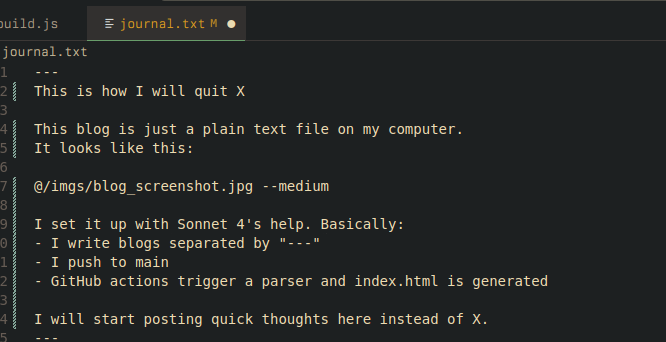

<!DOCTYPE html>
<html lang="en">
<head>
   <meta charset="UTF-8">
   <meta name="viewport" content="width=device-width, initial-scale=1.0">
   <title>avi's μblog</title>
   <style>
       @import url("https://fonts.googleapis.com/css2?family=IBM+Plex+Mono:wght@400;700&display=swap");
       :root {
           --color-dark: #1a1a1a;
           --color-light: #fafafa;
           --color-primary: #008080;
           --spacing: 1.5rem;
           --font-stack: "IBM Plex Mono", monospace;
       }
       @media (prefers-color-scheme: dark) {
           :root {
               --color-dark: #fafafa;
               --color-light: #1a1a1a;
           }
       }
       * { box-sizing: border-box; text-align: left; }
       body { 
           background: var(--color-light); 
           color: var(--color-dark); 
           padding: 5vw; 
           font-family: var(--font-stack); 
           font-size: 1.5rem; 
           line-height: 1.7; 
           max-width: 60ch; 
           margin: 0 auto; 
       }
       h1 { 
           font-weight: 700; 
           font-size: 2rem; 
           line-height: 1.3; 
           margin-bottom: calc(var(--spacing) * 2);
       }
       h2 { 
           font-weight: 700; 
           font-size: 1.5rem; 
           line-height: 1.3; 
           margin-bottom: calc(var(--spacing) / 2);
       }
       .nav { margin-bottom: var(--spacing); }
       .home-link { 
           color: currentColor; 
           text-decoration-color: var(--color-primary); 
           text-decoration-thickness: 0.2ex; 
           text-underline-offset: 0.3ex; 
       }
       .home-link:hover { text-decoration-thickness: 0.3ex; }
       .entry { 
           margin-bottom: calc(var(--spacing) * 2); 
           padding-bottom: var(--spacing); 
           border-bottom: 1px solid rgba(0, 0, 0, 0.1); 
       }
       .entry-summary { 
           cursor: pointer; 
           display: flex; 
           justify-content: space-between; 
           align-items: baseline; 
       }
       .entry-toggle { 
           font-size: 1rem; 
           opacity: 0.7; 
       }
       .entry-title { margin: 0; }
       .entry-date { 
           opacity: 0.5; 
           font-size: 1rem; 
           margin-top: calc(var(--spacing) / 2);
           margin-bottom: calc(var(--spacing) / 2);
       }
       .entry-content { 
           white-space: pre-line; 
           font-size: 1.3rem;
           display: none; 
       }
       .entry-content.open { display: block; }
       .img-small { max-width: 200px; }
       .img-medium { max-width: 400px; }
       .img-large { max-width: 100%; }
       img { 
           display: block; 
           height: auto; 
           margin: var(--spacing) 0; 
           border-radius: 4px; 
       }
       a { 
           color: currentColor; 
           text-decoration-color: var(--color-primary); 
           text-decoration-thickness: 0.2ex; 
           text-underline-offset: 0.3ex; 
       }
       a:hover { text-decoration-thickness: 0.3ex; }
   </style>
</head>
<body>
   <header>
       <div class="nav"><a href="https://avi.engineer" class="home-link">home</a></div>
       <h1>avi brown's μblog</h1>
       <h2>assorted thoughts sent directly from the terminal</h2>
   </header>
   <main>
       
       <article class="entry">
           <div class="entry-summary" onclick="toggleEntry(this)">
               <h2 class="entry-title">LUTs vs DSPs</h2>
               <span class="entry-toggle">+</span>
           </div>
           <div class="entry-content">
               <div class="entry-date">25 may 2025</div>
               Til now I haven't really understood why FPGAs often ship with dedicated DSP blocks. This always seemed off to me bc shouldn't any digital logic be implementable directly on the FPGA? And while this is true in terms of -functionality- (any DSP functionality can theoretically be implemented in the FPGA lattice) there is likely a lot of resource inefficiency with things like multipliers which may take up hundreds of LUTs. For instance a simple 2-input AND gate may use the same LUT resource as a complex 6-input boolean function.
(B
           </div>
       </article>
       
       <article class="entry">
           <div class="entry-summary" onclick="toggleEntry(this)">
               <h2 class="entry-title">The Maker Cage</h2>
               <span class="entry-toggle">+</span>
           </div>
           <div class="entry-content">
               <div class="entry-date">25 may 2025</div>
               There is a strain within the maker scene of geeks driven by a desire to democratize everything into plug-and-playable oblivion. I was sucked into this at the start because it enabled me to achieve builds with the semblance of engineering when it reality it required less prowess than a LEGO set. Unjustified dopamine hits locked me within a cage of mediocrity. It wasn't until I began stumbling upon actual engineers that my self-image began to crack and I grew aware of the cargo cult that is the maker scene. That is when I decided to stop making toys and start engineering the messiah.
           </div>
       </article>
       
       <article class="entry">
           <div class="entry-summary" onclick="toggleEntry(this)">
               <h2 class="entry-title">pour que</h2>
               <span class="entry-toggle">+</span>
           </div>
           <div class="entry-content">
               <div class="entry-date">25 may 2025</div>
               Modern PCBs use copper pours to fill blank space as opposed to older PCBs which just leave blank substrate, just realizing this is why a lot of newer PCBs "feel" more substantial (among other reasons).  
Lots of nice benefits to copper pours (some of which I don't fully understand) in the comments of this <a href="https://hackaday.com/2025/01/31/a-history-of-copper-pours/">hackaday article</a>
Copper pours reducing inductance for power connections feels intuitively right to me but I need to understand why
           </div>
       </article>
       
       <article class="entry">
           <div class="entry-summary" onclick="toggleEntry(this)">
               <h2 class="entry-title">Peeking under the hood</h2>
               <span class="entry-toggle">+</span>
           </div>
           <div class="entry-content">
               <div class="entry-date">25 may 2025</div>
               I can point to a few key encounters online that made me realize I don't know what I'm talking about.
One was when I first stumbled upon geohot's streams on youtube and watched him open up the dissassembly of a program and analyze it. I didn't even know what assembly was. I realized then that I literally did not know what a computer program was or how things ran on computers. It blew my mind open and led me to his "From the transistor" repo which I studied time and time again.
Another one was when I was trying to get an ODrive motor controller to work and I clicked into <a href="https://www.youtube.com/watch?v=Htb2Q0Yw1FU&ab_channel=MattBilsky">this video</a> by accident. Seeing this guy reverse engineer some bytes to understand the underlying protocol made me realize that I didn't know how devices communicate with each other -- what IS Tx and Rx?! What are protocols?!
Another is finding <a href="https://x.com/MajmudarAdam">@adammaj's</a> X account when he was designing his own GPU on the SILICON level. This sent me reeling and led me to the Zero to ASIC course which led to many other rabbit holes.
There have been so many of these over the years and they are gifts. I pray for many more.
           </div>
       </article>
       
       <article class="entry">
           <div class="entry-summary" onclick="toggleEntry(this)">
               <h2 class="entry-title">RP2040/2350's documentation...</h2>
               <span class="entry-toggle">+</span>
           </div>
           <div class="entry-content">
               <div class="entry-date">25 may 2025</div>
               is so readable without skimping on technical details. Reading it feels like talking to an experienced mentor.
Like I could read <a href="https://datasheets.raspberrypi.com/rp2040/hardware-design-with-rp2040.pdf">this</a> design guide for fun
           </div>
       </article>
       
       <article class="entry">
           <div class="entry-summary" onclick="toggleEntry(this)">
               <h2 class="entry-title">I am now blogging from my terminal</h2>
               <span class="entry-toggle">+</span>
           </div>
           <div class="entry-content">
               <div class="entry-date">24 may 2025</div>
               I made a little bash script that lets me just type into the terminal and hit enter and this magically appears on my website.
I love technology
           </div>
       </article>
       
       <article class="entry">
           <div class="entry-summary" onclick="toggleEntry(this)">
               <h2 class="entry-title">This is how I quit</h2>
               <span class="entry-toggle">+</span>
           </div>
           <div class="entry-content">
               <div class="entry-date">23 may 2025</div>
               This blog is just a plain text file on my computer.
It looks like this:

I set it up with Sonnet 4's help. Basically:
- I write blogs separated by three dashes
- I push to main
- GitHub actions trigger a parser and index.html is generated
I will start posting quick thoughts here instead of X.
           </div>
       </article>
       
       <article class="entry">
           <div class="entry-summary" onclick="toggleEntry(this)">
               <h2 class="entry-title">Flow-based robotics software</h2>
               <span class="entry-toggle">+</span>
           </div>
           <div class="entry-content">
               <div class="entry-date">21 april 2025</div>
               What is a robust, reasonable, and performant pattern for robotics software? I have become fixated with the idea of "motor schemas" as outlined in <a href="https://drive.google.com/file/d/1wTOULkwuqKUGy5b5qClm-2N-jUn7pVHe/view">Behavior Based Robotics</a>.
To put it in my own words: For every data input (i.e. sensor reading) there should be a <a href="https://en.wikipedia.org/wiki/Directed_acyclic_graph#:~:text=A%20directed%20acyclic%20graph%20is,a%20path%20with%20zero%20edges">unidirectional computational flow</a> transforming the input into a motor command. The system as a whole is comprised of parallel flows which are not aware of one another, and whose constituent motor commands are vector summed to yield overall motor behavior.
This feels clean and data-driven to me. A natural fit for this approach is <a href="https://blog.kodigy.com/post/state-of-flow-based-programming/">flow-based programming</a> which seems like a healthy balance between the composability of functional programming and some light statefulness (state may exist on a component level though there is no global state).
A great library for embedded flow-based programming is <a href="https://github.com/Zubax/ramen">RAMEN</a> from Zubax Robotics. I've played with it on my laptop and now I'm trying to settle on an MCU with a decent C++20-compatible toolchain with the goal of making a little PoC robot.
Now, if we design our system such that the <a href="https://kvaser.com/wp-content/uploads/2014/08/cankingdom301p.pdf">Modules Serve the Network</a> (after all, what is a system if not a network?), and let our robot accept network definitions as input, then things start to get interesting.
           </div>
       </article>
       
   </main>
   <script>
       function toggleEntry(summary) {
           const content = summary.parentNode.querySelector('.entry-content');
           const toggle = summary.querySelector('.entry-toggle');
           if (content.classList.contains('open')) {
               content.classList.remove('open');
               toggle.textContent = '+';
           } else {
               content.classList.add('open');
               toggle.textContent = '−';
           }
       }
   </script>
</body>
</html>
